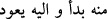

dönmek maksadıyla ta’zîm için ihrama girer, telbiye getirir. Burası dünyevi vatanın olan
Mekke-i Müşerrefe’dir.
Rivâyete göre; Rasûlullah (s.a.) Medine’ye hicret esnasında Ebû Bekir ile beraber
mağaradan çıkınca, takip edilme endişesiyle yolunu değiştirmiş ve emin olunca da
tekrar yoluna dönmüş ve Cuhfe’de konaklamıştı. Burası Mekke’ye 82 mil mesâfede olup
önceleri “Mehyea” adıyla anılan büyük bir kasaba idi. Âd’ın kardeşleri olan Ubeyd
oğulları, Amâlikalılar onları Yesrîb’ten çıkardığı için burada ikamet ederlerdi.
Sonraları bir sel gelmiş ve onları silip süpürmüştü. Bu yüzden burası “Cuhfe” diye
isimlendirilmiştir. Rasûlullah (s.a.), burada konaklayınca Mekke’yi özledi. Çünkü
Mekke, onun doğduğu yerdi ve onun vatanıydı; babalarının da doğdukları ve yaşadıkları
memleketleri idi. Aşireti de oradaydı. İbrahim (a.s.)’ın da haremiydi.
Kervancı, acele etme, ayağım çamurdadır
Dostların menzilinden çıkmak, ayrılmak zordur
Sonucunda dostların sohbetinden ayrı kalmak varsa
Akıllı olan hiç kimseyle ülfet etmez
Dedi ki:
Benim yanışımdan mecliste fitneler ortaya çıkar
Çünkü o an hatırıma dostun meskeni, konağı gelir
Cebrâil (a.s.) inip Rasûlullah (s.a.)’e dedi ki: “Mekke’yi özledin mi?” O (s.a.) da:
“Evet” dedi. Kavuşma isteğini açıklamam mümkün olmadı… Ve bu âyeti vahyedip onu
zaferle müjdeledi. Yani, Allah seni korkudan emin kılacak ve muzaffer olarak Mekke’ye
döndürecek... Dolayısıyla, şu anda Allah’ın seni, iki baban İbrâhim ve İsmâil (a.s.)’ın
yoluna (onların hicret sünnetine) soktuğundan şüphe etme. İbrâhim (a.s.) küfür diyarı
olan Harrân’dan arz-ı mukaddese hicret edip bir daha dönmedi. İsmâil (a.s.) da arz-ı
mukaddesten daha mukaddes bir yer olan Mekke’ye hicret etti; o da geri dönmedi.
Hâfız der ki:
Gayb âleminin meleği bana şu güzel müjdeyi verdi:
“İnsan dünyada sürekli mahzun kalmayacak”
İbn Ata (r.h.) der ki: Sana Kur’ân’ı vahyeden, devamlı olarak her vakitte sırrını
müşâhede etmen için seni çıktığın yer olan vatanına tekrar döndürmeye de kâdirdir.
Kâşifî der ki: “Me’âd”, ahadiyyet-i zâtta fenâfillah olmaktır. Kezâ makâm-ı tahakkukta
bütün sıfatlarla bakâbillah olmaktır. Basîret üzere olan sâlike burada “
(O’ndan geldi, O’na döner)” sırrı ortaya çıkar.
O’nun başlangıcı O’ndandır; dönüşün de O’na olması gerekir